De la fuite des passions destructrices prêchée par le Pasteur Oumarou Josué OUÉDRAOGO, à l'appel de Son Excellence Tertius ZONGO à un leadership chrétien au service de la société, en passant par l'immersion citoyenne à Faso Mêbo et l'enseignement d'Amen Kossi KUWONU sur la connaissance intime de Dieu — la quatrième journée a conduit la jeunesse de la discipline personnelle jusqu'à l'engagement concret dans la cité.
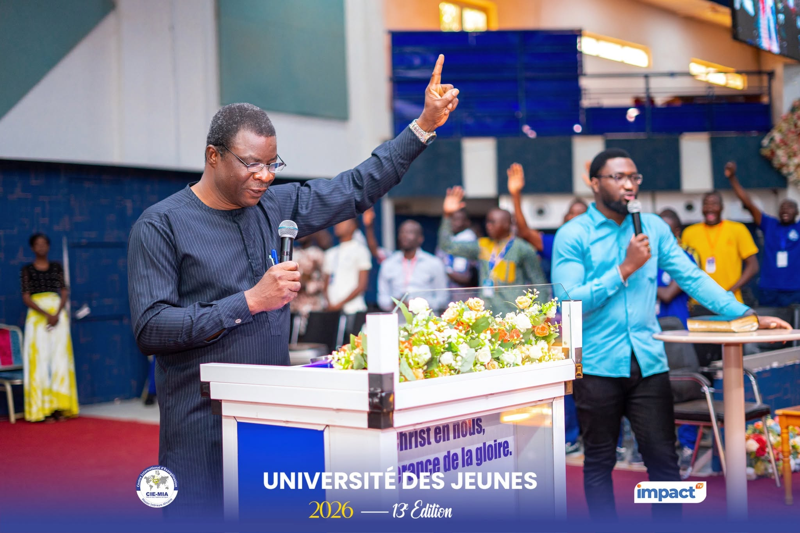
Retour sur les temps forts de cette quatrième journée, tels que relayés par le Bulletin quotidien Édition Spéciale des Universités des Jeunes du CIE/MIA.
Prendre conscience des dangers de certaines passions et faire le choix d'une vie conforme aux principes de Dieu.
La 3ᵉ matinée des UJ a débuté par un enseignement sur les défis spirituels et moraux auxquels la jeunesse est confrontée, notamment sur le thème : « Fuir les passions de la jeunesse », 2 Timothée 2:22. Par ce message, l'homme de Dieu a exhorté les jeunes à prendre conscience des dangers de certaines passions et à faire le choix d'une vie conforme aux principes de Dieu.
D'entrée de jeu, le Pasteur Oumarou Josué Ouédraogo a rappelé que la jeunesse constitue une étape déterminante de la vie. Elle est caractérisée par l'énergie, les ambitions, les rêves et les nombreuses opportunités, mais aussi par des vulnérabilités particulières. Certaines passions détournent les jeunes de leur destinée, surtout quand elles ne sont pas maîtrisées ou soumises aux valeurs divines.
« La jeunesse est un temps de construction, mais aussi un temps de choix décisifs. »Pasteur Oumarou Josué Ouédraogo
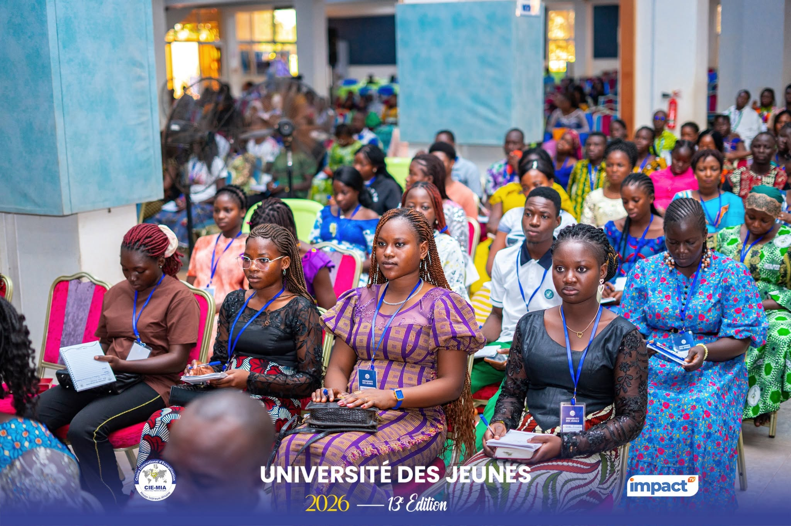
L'orateur a donc invité les participants à demeurer vigilants face aux influences susceptibles de compromettre leur avenir spirituel, moral et social.
Au cours de son intervention, le Pasteur Oumarou Josué Ouédraogo a identifié plusieurs passions fréquemment rencontrées chez les jeunes. Parmi elles figurent l'impureté sexuelle, la colère, l'impulsivité, la non-maîtrise de soi, l'orgueil, la quête excessive de popularité, l'amour de l'argent, la recherche effrénée des plaisirs, les mauvaises fréquentations ainsi que la dépendance aux réseaux sociaux. Pour lui, ces comportements peuvent progressivement éloigner le jeune chrétien et affaiblir sa communion avec le Saint-Esprit. Il a par ailleurs attiré leur attention sur les influences négatives véhiculées par les réseaux sociaux, qui banalisent le péché et encouragent des modes de vie contraires à la Parole de Dieu.
Pour illustrer son propos, l'orateur a évoqué l'exemple de Joseph dans l'Ancien Testament. Face à la tentation provoquée par l'épouse de Potiphar, Joseph n'a pas cherché à négocier ni à tester sa résistance, il a choisi de fuir (Genèse 39:12-13). Cette attitude, a expliqué le prédicateur, demeure une leçon pour les jeunes d'aujourd'hui. Certaines situations exigent une rupture immédiate plutôt qu'une confrontation prolongée : « La victoire ne consiste pas toujours à affronter la tentation, mais parfois à s'en éloigner », a-t-il indiqué.
Le Pasteur Ouédraogo a également insisté sur les raisons bibliques qui justifient cette fuite des passions destructrices. Il a rappelé que « le salaire du péché, c'est la mort » (Romains 6:23), ce qui signifie que le péché produit toujours des conséquences spirituelles, morales et parfois sociales. Il s'est également appuyé sur Jacques 1:14-15, qui décrit le processus par lequel la convoitise conduit au péché, puis à la mort. Pour l'orateur, ces passages démontrent que les compromis, même insignifiants, peuvent progressivement entraîner des conséquences graves pour la vie du jeune chrétien.
L'enseignement a également mis l'accent sur la responsabilité du chrétien envers son propre corps. Le prédicateur a rappelé que le corps du jeune chrétien est également le temple du Saint-Esprit (1 Corinthiens 6:19-20). Cette réalité implique, selon lui, une exigence particulière de sainteté et de discipline personnelle. Le chrétien n'est plus appelé à vivre selon ses seuls désirs, mais à honorer Dieu dans ses choix, ses comportements et ses relations.
La vie chrétienne ne se limite pas à éviter le mal. Le texte de 2 Timothée 2:22 invite également à rechercher activement « la justice, la foi, l'amour et la paix ». Pour le Pasteur Ouédraogo, la véritable victoire spirituelle ne consiste pas seulement à fuir certaines pratiques, mais à remplir sa vie de valeurs conformes à la volonté de Dieu. Cette transformation passe notamment par une relation vivante avec la Parole de Dieu. Le jeune peut préserver la pureté de sa conduite en se laissant guider par les enseignements des Écritures (Psaume 119:9).
En conclusion, le Pasteur Oumarou Josué Ouédraogo a lancé un appel à la responsabilité individuelle. Chaque jeune, a-t-il affirmé, doit prendre la décision ferme de s'éloigner de tout ce qui menace sa relation avec Dieu. Au-delà des enseignements bibliques, le message de cette quatrième matinée a résonné comme une invitation à faire des choix courageux, à cultiver la sainteté et à préserver la destinée que Dieu a préparée pour chacun. En effet, la jeunesse chrétienne est appelée non seulement à fuir ce qui détruit, mais surtout à poursuivre avec détermination ce qui contribue à sa croissance spirituelle et à l'accomplissement de sa destinée.
2 Timothée 2:22 · Genèse 39:12-13 · Romains 6:23 · Jacques 1:14-15 · 1 Corinthiens 6:19-20 · Psaume 119:9
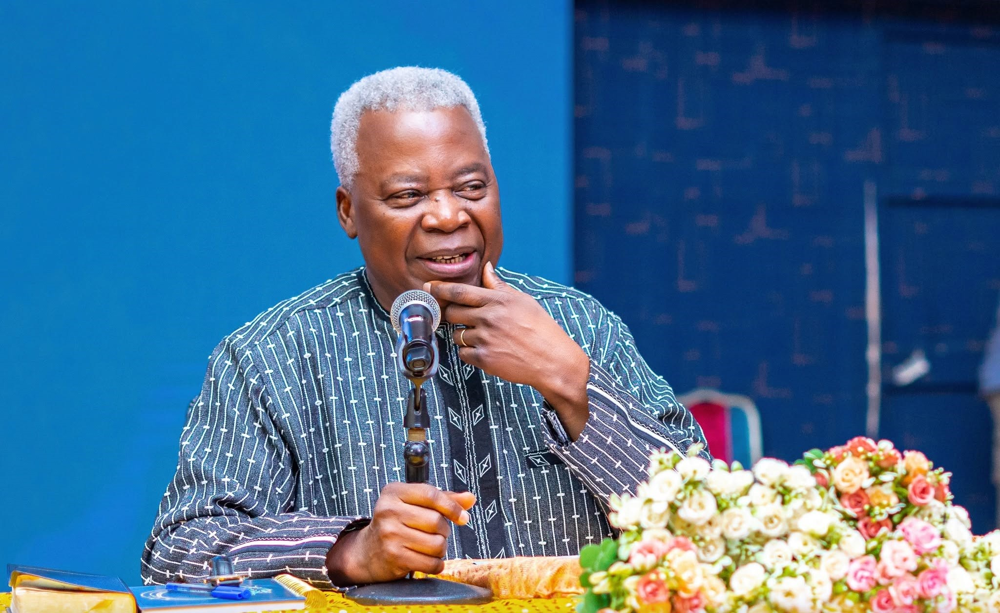
Concevoir l'influence non comme une quête de pouvoir, mais comme une responsabilité de service, de transformation et de témoignage.
Sous la modération du PDG Abdoul Karim Bandé, Son Excellence Tertius Zongo, conférencier de la session consacrée au thème « Leadership et impact dans la société », a invité les jeunes chrétiens à concevoir l'influence non comme une quête de pouvoir, mais comme une responsabilité de service, de transformation et de témoignage.
Au cours de son intervention, le leadership chrétien a été défini comme une capacité à exercer une influence positive dans tous les domaines de la vie. Le conférencier a souligné qu'il ne se résume ni à un titre, ni à une fonction, ni à une position d'autorité. Il commence plutôt par la manière dont chaque chrétien vit, travaille, sert et répond aux besoins de son environnement.
En se référant à Matthieu 5:14 « Vous êtes la lumière du monde », le conférencier a exhorté les jeunes chrétiens à exprimer concrètement leur foi dès à présent.
« Vous êtes la lumière du monde. »Matthieu 5:14
Cette responsabilité ne serait pas réservée aux responsables d'églises, aux dirigeants d'entreprise ou aux personnalités publiques. Elle concerne également les élèves, les étudiants, les salariés, les parents et tous ceux qui souhaitent apporter une contribution utile à leur communauté.
L'objectif de cette influence n'est pas la reconnaissance personnelle. Les bonnes œuvres doivent conduire les hommes à glorifier Dieu, conformément à Matthieu 5:16. Le témoignage chrétien se traduit ainsi par l'intégrité, le respect de la parole donnée, la justice, la compassion et la qualité du travail accompli.
La question de l'identité en Christ a constitué un autre axe majeur de la session. À partir de 1 Pierre 2:9, les participants ont été encouragés à comprendre leur valeur et leur responsabilité en tant qu'enfants de Dieu. Cette identité ne doit pas conduire à se retirer de la société, mais à y porter des valeurs telles que l'honnêteté, la fidélité, le sens du bien commun et l'intégrité.
Le conférencier a également placé le service au centre du leadership. Jésus-Christ a été présenté comme le modèle de référence, lui qui est venu « non pour être servi, mais pour servir ». À travers le lavage des pieds de ses disciples, il rappelle qu'aucune responsabilité ne dispense d'accomplir des tâches humbles. Selon cette perspective, plus une personne reçoit d'autorité, plus elle doit développer l'écoute, l'humilité et la disponibilité.
Les jeunes ont été appelés à commencer par les petites responsabilités : respecter leurs engagements, travailler avec sérieux, servir dans leur famille et Église et faire preuve de rigueur dans leurs études ou leurs activités professionnelles. Cette fidélité quotidienne est présentée comme une préparation aux responsabilités plus importantes.
« Quel problème puis-je aider à résoudre ? »Son Excellence Tertius Zongo
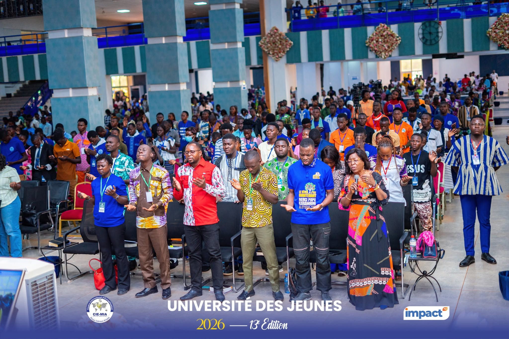
Le conférencier a enfin insisté sur la nécessité de passer de la foi à l'action. En se basant sur Jacques 1:22, il a invité les chrétiens à devenir des bâtisseurs capables d'identifier et de résoudre les problèmes de leur environnement. La question essentielle ne serait donc pas : « Quelle position puis-je obtenir ? », mais : « Quel problème puis-je aider à résoudre ? »
Dans cette optique, rechercher le bien de la cité, comme l'enseigne Jérémie 29:7, devient une responsabilité concrète. Éduquer, entreprendre, soigner, soutenir les plus vulnérables, promouvoir la paix ou améliorer son quartier sont autant de façons d'exercer un leadership utile.
Le message s'est conclu par un appel à une jeunesse chrétienne active, humble et engagée. Son influence doit se mesurer non à son statut, mais à sa capacité à servir, à bâtir et à refléter les valeurs de l'Évangile dans la société.
Matthieu 5:14 · Matthieu 5:16 · 1 Pierre 2:9 · Jacques 1:22 · Jérémie 29:7
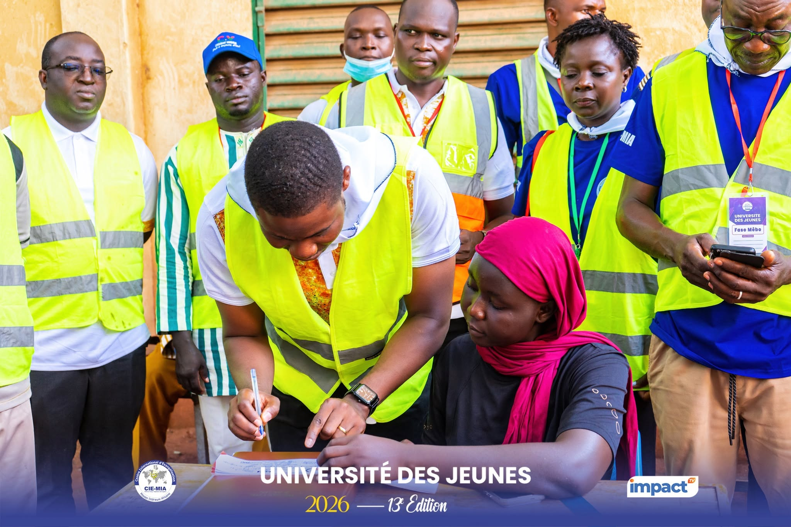
Dans un esprit d'action citoyenne, les participants se sont mobilisés pour une immersion patriotique à Faso Mêbo, avec pour objectif de contribuer à la construction du Faso.
Dans un esprit d'action citoyenne, les participants aux Universités des Jeunes du Centre International d'Évangélisation Mission Intérieure Africaine (CIE/MIA) se sont mobilisés pour une immersion patriotique et citoyenne à Faso Mêbo. Objectif : contribuer à la construction du Faso.
Dans une ambiance conviviale rythmée par les prestations de la fanfare, le Mouvement des Jeunes du CIE/MIA a organisé une immersion à Faso Mêbo. Organisateurs et participants ont traduit leur foi en actes concrets au service de la nation.
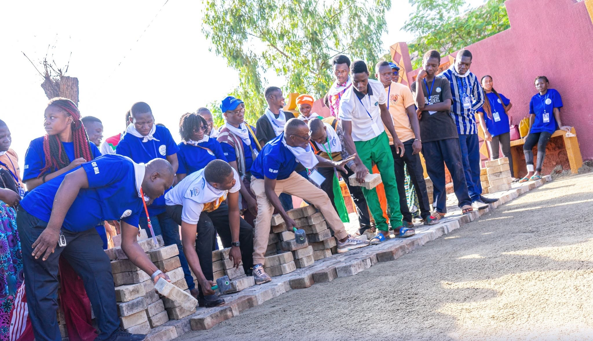
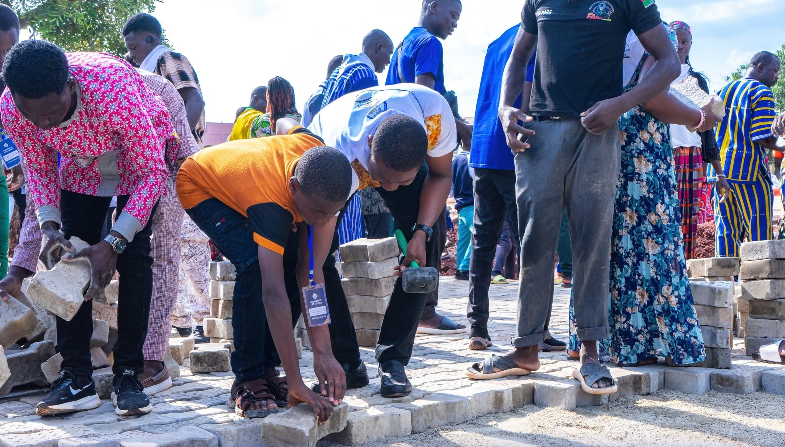
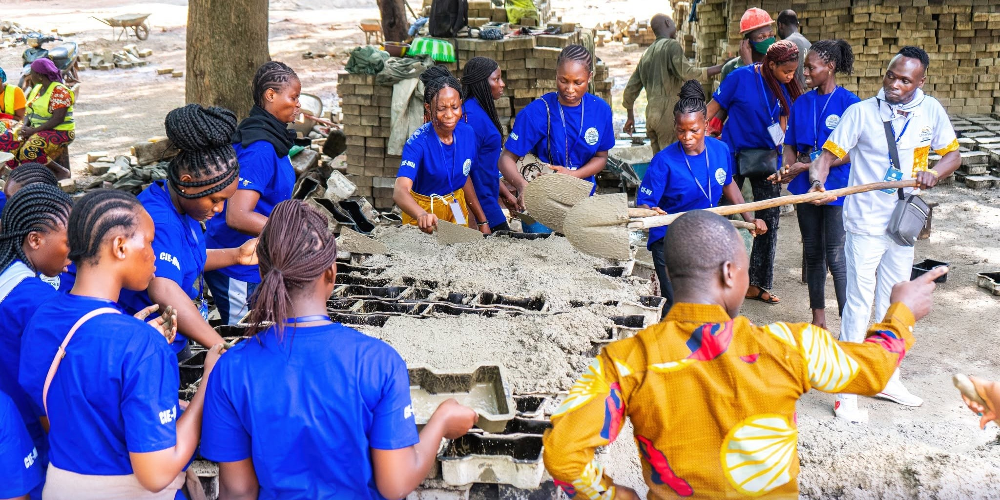
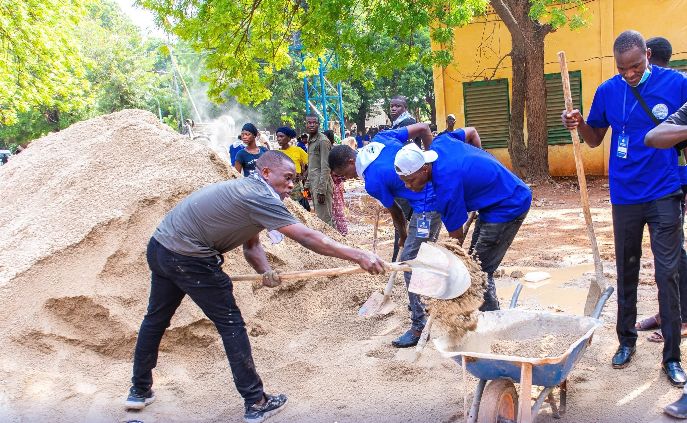
La cérémonie a été marquée par le don de dix-neuf (19) bidons d'huile de moulage destinés à soutenir les travaux de confection de pavés. Prenant la parole, le Pasteur Serge SAMANDOULGOU, Coordonnateur national des jeunes, a rappelé que le CIE/MIA n'en était pas à sa première action de solidarité, avant de saluer la vision portée par les autorités nationales et féliciter l'initiative Faso Mêbo pour sa contribution à l'amélioration des espaces urbains et du bien-être collectif.
Cette journée a mis en lumière la place de la jeunesse chrétienne dans la nation au-delà du cadre ecclésiastique. L'Université des Jeunes est une plateforme d'expression de la foi, mais aussi de formation spirituelle et civique.
Au total, 552 participants, organisés en deux équipes, ont été déployés au siège de l'initiative Faso Mêbo et sur le boulevard Thomas-Sankara pour la confection et le moulage de pavés, ainsi que le chargement et le déchargement de pavés.
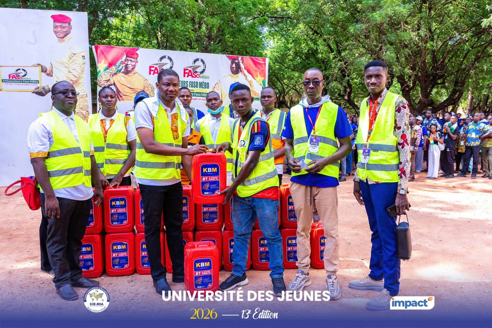
La journée s'est achevée par un temps d'action de grâce et d'intercession en faveur des Forces de défense et de sécurité. Par cette action, l'Église entend réaffirmer sa volonté de contribuer au développement du Burkina Faso.
552 participants · 19 bidons d'huile de moulage donnés · confection et moulage de pavés au siège de Faso Mêbo et sur le boulevard Thomas-Sankara.
Rechercher une connaissance véritable, personnelle et expérimentale de Dieu, à travers le sous-thème « l'importance de la Parole de Dieu dans la connaissance de Dieu ».
À l'occasion de la quatrième soirée de la session, le Pasteur Amen Kossi a invité les jeunes à rechercher une connaissance véritable, personnelle et expérimentale de Dieu à travers le sous-thème : « l'importance de la Parole de Dieu dans la connaissance de Dieu ». S'appuyant sur plusieurs récits bibliques, il a insisté sur le rôle central de Jésus-Christ et de la Parole dans la vie du chrétien.
« La véritable connaissance de Dieu, c'est par Jésus-Christ. »Amen Kossi Kuwonu
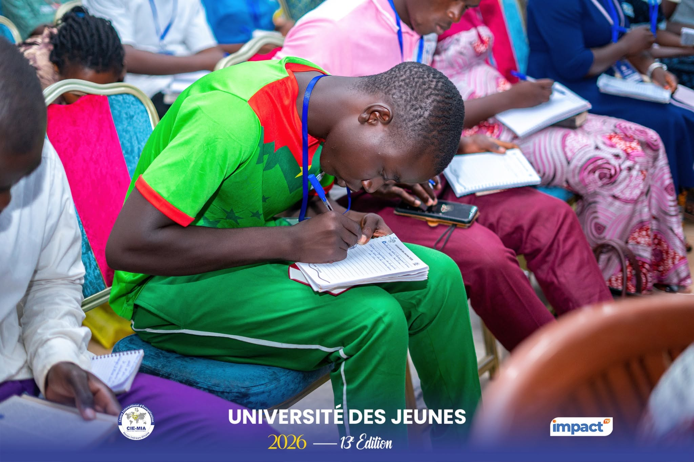
C'est autour de cette déclaration que le Pasteur Amen Kossi a articulé son enseignement. Pour l'orateur, connaître Dieu ne se limite pas à accumuler des informations ou à maîtriser des notions religieuses. Cette connaissance doit être à la fois « expérimentale et intime », mais également correcte et précise.
Le Pasteur Amen Kossi a rappelé que sans cette connaissance le jeune chrétien court de grands dangers dans sa vie. Il s'est référé à Osée 4:6 : « Mon peuple périt par manque de connaissance ». Pour lui, la connaissance de Dieu constitue donc le fondement indispensable pour vivre une foi solide et équilibrée. Il a souligné que la connaissance de Dieu par sa Parole contribue à la vie et à la piété, selon 2 Pierre 1:3.
Pour illustrer son propos, l'orateur a évoqué le cas du roi Salomon. Avant de lui transmettre le trône, David avait exhorté son fils à connaître le Dieu qu'il servait, conformément à 1 Chroniques 28:9. Cette recommandation témoignait, selon le Pasteur Amen Kossi, de l'importance d'une connaissance personnelle de Dieu pour celui qui veut véritablement le servir. Cette connaissance intime et personnelle, a-t-il poursuivi, influence directement les inclinations du cœur.
Le parcours de Salomon en constitue une illustration. Selon 1 Rois 11:12-13, le roi s'est progressivement détourné de Dieu. Le Pasteur a relevé que Salomon avait demandé la sagesse, une démarche qui n'était pas mauvaise en elle-même et qui avait même plu à Dieu. Cependant, il n'aurait pas suffisamment donné suite à l'instruction de rechercher d'abord une connaissance véritable de Dieu. Ses choix, notamment son attachement à des femmes étrangères, finirent par détourner son cœur de l'Éternel.
C'est dans ce même élan que l'orateur a exhorté les jeunes chrétiens à faire preuve de discernement dans le choix de leur future épouse, afin d'éviter que celle-ci ne les éloigne de Christ.
L'exemple de Samuel a également été présenté. D'après 1 Samuel 3:1-7, Samuel était déjà au service de Dieu alors même qu'il ne le connaissait pas personnellement encore. Il a donc servi avant de faire l'expérience d'une révélation personnelle de l'Éternel. Pour connaître Dieu, le Pasteur Amen Kossi a enfin exhorté les fidèles à demeurer en Christ et à rechercher la vérité qui affranchit, conformément à Jean 8:31-32. Il les a encouragés à prier, à proclamer régulièrement la Parole et à ne jamais s'en détourner, en référence à Josué 1:8.
L'orateur a conclu en partageant une expérience personnelle : son écoute régulière des enseignements de son père spirituel, Mamadou P. Karambiri, lui a permis, selon son témoignage, de mieux expérimenter la Parole de Dieu. Un encouragement à faire de la connaissance de Dieu non seulement un enseignement reçu, mais une réalité vécue au quotidien.
Osée 4:6 · 2 Pierre 1:3 · 1 Chroniques 28:9 · 1 Rois 11:12-13 · 1 Samuel 3:1-7 · Jean 8:31-32 · Josué 1:8